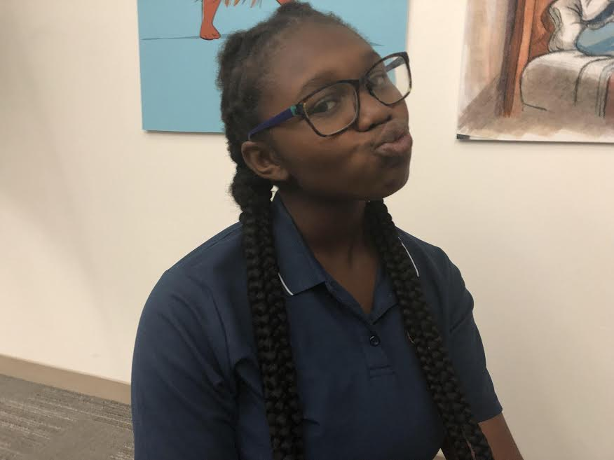
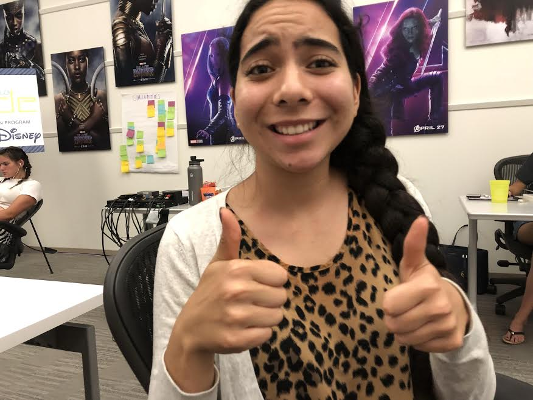

Email: chloethefreakinlegend@gmail.com
Chloe
Oshiomegie
Vlogger, Friends with Paul Rudd, Freakin' Legend.
Hey guys! My name is Chloe and I'm a freakin legend. No one knows this about me but running is my secret passion. Whenever someone talks, I never listen, all I can think about is running. I have a deep yearning to run, and I NEED to fufill it. Please pick me to be your buddy!
Contact Me
Email: chloethefreakinlegend@gmail.com

Camila Lee
Student, Lover of Grilled Fish, Momager.
What's Up? I'm Camila and I'm a full-time student and momager. You can imagine the hard work I have to put in to balance those two difficult tasks. I recently have been asking myself 'What about you, Camila? When are you gonna start taking care of yourself, Camila?'. I think this website is the perfect solution. A healthy break from my hectic schedule and I get to make a new friend! Wanna be that new friend?
Contact Me
Email: camilaisamomager@yahoo.com

Email: kenyalovesbridgett@apple.com